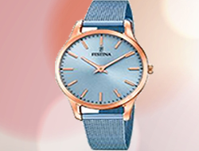
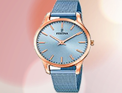
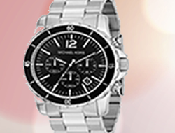
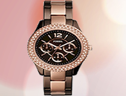

| INICIO | MISION | VISION | SERVICIO | POLITICA | RELOJES | HOMBRE | MUJER | COLECIONES | COMPROMISO | OBJETIVO |
Un reloj es el instrumento que los seres
humanos usamos extendidamente para medir el tiempo
en las típicas unidades: horas, minutos y segundos.
Si bien la principal función de los relojes es la de
medir el tiempo permitiéndonos de esta manera conocer
cuál es la hora al momento de consulta, también, el reloj,
nos permite activar alarmas a un horario determinado para
que no nos olvidemos de realizar tal o cual acción o bien
medir un acontecimiento, entre las más destacadas.
Desde los tiempos más remotos, el hombre se ha preocupado por
conocer y medir el tiempo por lo cual el reloj es un elemento
antiquísimo que con el correr de los siglos y la evolución
tecnológica ha conseguido una notable mejora en cuestiones
como ser: la precisión, su apariencia y la reducción
de costos de fabricación.En la actualidad el reloj está
en todos lados, en nuestras muñecas, en la computadora,
en equipos de audio, de tevé, en oficinas públicas,
en transportes públicos, entre otros.
 


Cabe destacarse, que además de la funcionalidad
que indicamos líneas arriba, el reloj, se ha convertido en
un objeto de lujo porque existen empresas que tienen patentados
modelos que valen varios miles de dólares, en tanto, poseer algunos
de ellos es claro símbolo de status y distinción.Existe una
importante variedad de relojes, los de uso personal, pueden
ser mecánicos o electrónicos, de pulsera o bolsillo y funcionar
por analogía o de manera digital; el primero indica la hora
a partir de unas manecillas y el otro a través de números
digitales.Mientras tanto una muy pequeña pila alojada en
su mecanismo envía los impulsos que lo hacen funcionar.
Si bien son menos exactos que los electrónicos,
los relojes mecánicos son mucho más valorados
tanto en diseño como en precio.El reloj de pulsera
es el formato más usado en la actualidad, el mismo
consiste de dos correas que se ajustarán a
la muñeca y su cuadrante puede ser redondo,
hexagonal, cuadrado o hasta hay diseños pentagonales.
Otros relojes también populares son los cronómetros,
el reloj de bolsillo, los relojes alojados en torres
y en campanarios y el reloj de salón.